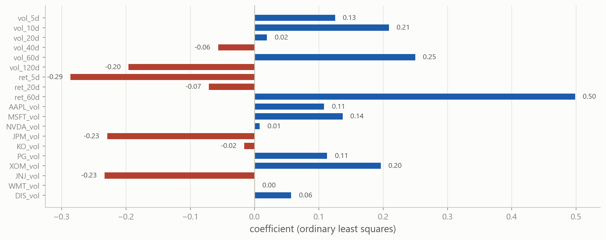
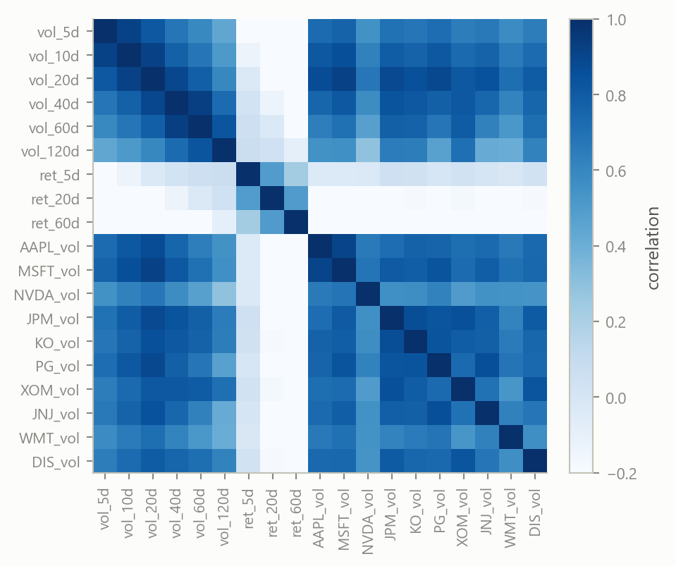
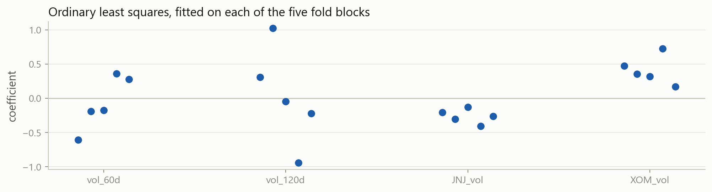
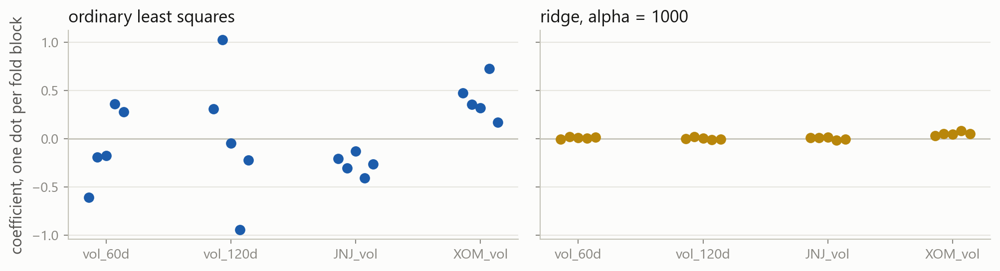
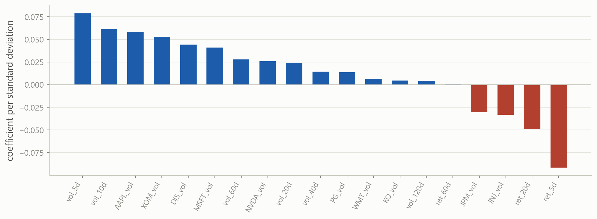
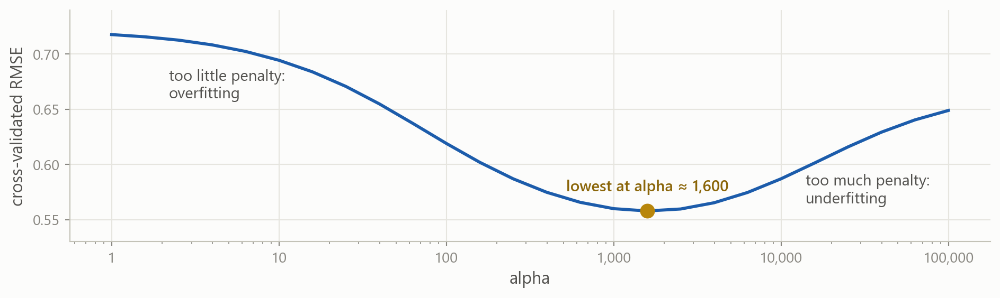
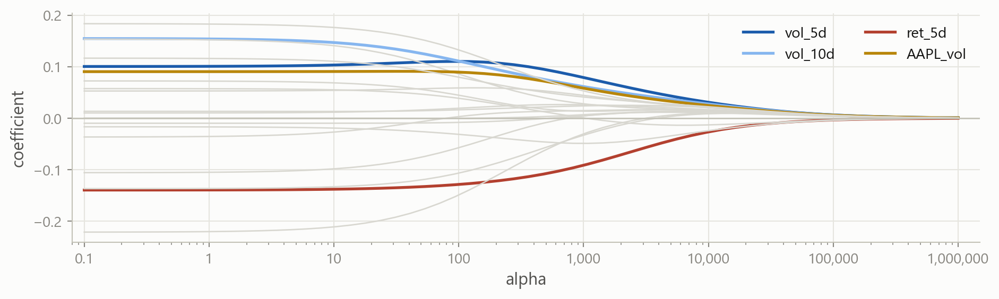
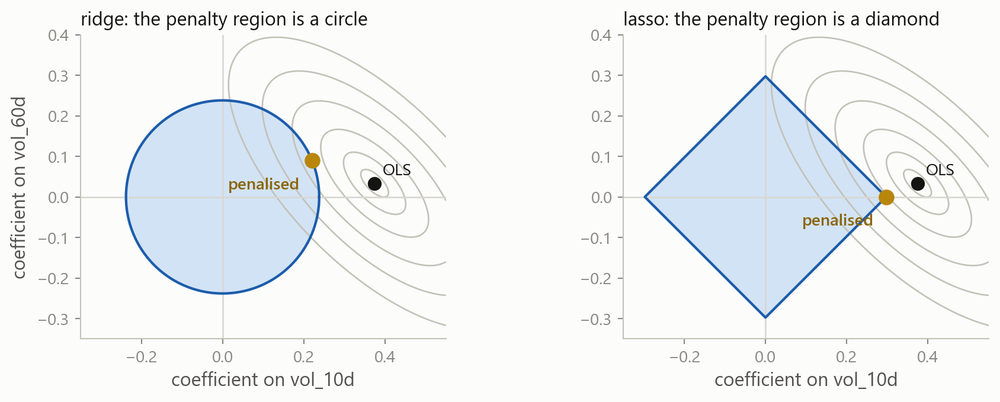
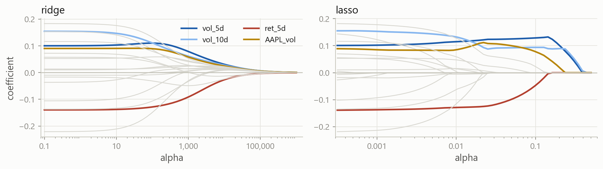
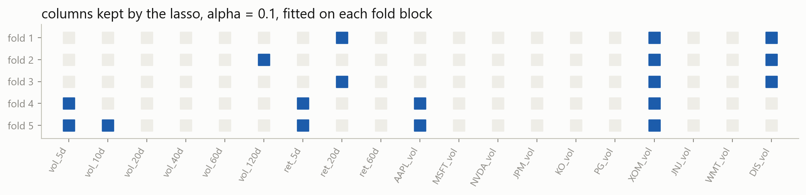

Machine Learning in Finance · Session 6
Cross-validation compared three candidates and kept the one-column model. Each candidate either contained a column or did not.
Three columns give eight possible subsets. A real table has far more columns than three.
Part 1
A wider table, and what ordinary least squares does with it.
How volatile will the whole market be over the next twenty trading days?
Why it matters the risk of almost any portfolio moves with the index, so its volatility sets margins, limits and option prices
What you know today the index’s own history over several windows, and how volatile each stock in it has been lately
One row per trading day, built from prices.csv with rolling and shift as last time. The index is SPY, the S&P 500 fund in the data.
Building this table from the price file is one of the exercises.
table.columns[:-1] is every column except the last, which is the target.
The RMSE is computed many times this session. A two-line function keeps every later cell short.
This is the same model as last time, on the index. A test error of 0.237 is the number to beat.
The training error fell and the test error rose. Eighteen extra columns made the forecast worse.

Higher volatility at J&J and JPMorgan lowers the forecast, and the index’s own volatility raises it at 60 days and lowers it at 120. Those signs are not believable.

vol_40d and vol_60d correlate at 0.93. Two columns with the same information can take +5 and −4.8 and fit exactly as well as +0.1 and +0.1. The fit is fine; the coefficients are noise.

Each column has five dots, one per block of training rows. vol_120d is +1.02 on one block and −0.94 on another. A coefficient that changes sign with the sample cannot be used for next year.
Subset selection asks, for each column, in or out. A penalty asks a softer question: how large may its coefficient be?
Part 2
A penalty on the squared coefficients, and one new argument.
\text{RSS} = \sum_{i=1}^{n}\left(y_i - \hat{y}_i\right)^2
The residual sum of squares on the training rows, and nothing else. A coefficient of +5 is accepted if it lowers the RSS by a little, which is how +5 and −4.8 on two near-copies come about.
\text{RSS} + \alpha \sum_{j=1}^{p} \beta_j^2
Ridge adds a charge for the size of the slopes. A coefficient of 5 now costs 25 times alpha, and is kept only if it lowers the RSS by more than that.
The sum runs over the slopes and leaves the intercept alone.
alpha is the price of coefficient size. It is set before .fit() runs, and the rows cannot choose it, because every value gives a fitted model.
Only the first line changed: Ridge fits and predicts exactly like LinearRegression. 0.228, against 0.248 unpenalised and 0.237 for one column.
Fit the same nineteen columns with a much smaller penalty and a much larger one. Which of the earlier numbers does each land near?
Try 1 for the small one and 100000 for the large one.
alpha=1 is ordinary least squares to three decimals: a penalty of 1 is nothing next to an RSS over 1,894 rows. alpha=100000 is worse than repeating this month, and at ten million the error is 0.291, the same as guessing the average.
Too little penalty leaves the overfitting in. Too much removes the signal with the noise.

These are the same four columns on the same five blocks. The ridge coefficients are small and they stay put, so a coefficient fitted on the past holds on the years to come. That is a little bias in exchange for far less variance.
Part 3
The penalty charges by coefficient size, and size depends on units.
Ridge shrinks the column in small units first, whatever it contains. The penalty is judging columns by their units, not by their usefulness.
The coefficient is exactly one hundred times larger and the test error is exactly the same.
The coefficient on vol_20d falls from 0.031 to 0.0003. Ridge has dropped the column, and nothing about its information changed.
z = \frac{x - \bar{x}}{s}
Subtract each column’s mean and divide by its standard deviation. Every column then has mean 0 and standard deviation 1, whatever units it arrived in, and one coefficient is comparable with another.
The standardising formula from two sessions ago, where it was noted that penalised regression needs it.
.fit() learns each column’s mean and standard deviation from the training rows. .transform() applies them, to the test rows as well: their own mean is information from the future.
With every column in standard deviations, the same model and the same alpha score 0.218, down from 0.228.

The bars are comparable now. The last five and ten days matter most, a market that fell in the last week is more volatile in the month after, and the other stocks each add a little.
The training rows are scaled and then fitted; the test rows are scaled the same way and then predicted. Cross-validation repeats the pair on five fitting blocks, so the scaler has to be refitted inside every fold with the model.
A pipeline is a list of named steps. .fit() fits the scaler, transforms, and fits the ridge; .predict() transforms with the fitted scaler and predicts. The names are yours to choose.
cross_val_score takes the pipeline where it took LinearRegression() last time, and refits the scaler inside each fold. The third fold still contains March 2020.
Part 4
A setting the data cannot pick, and the tool that searches over it.
The intercept and the nineteen slopes. .fit() computes them from the training rows and stores them with a trailing underscore.
alpha. Passed in before .fit() and never changed by it. Every value gives a fitted model, so the training rows cannot say which value is right.
A hyperparameter is chosen the way candidates were chosen last time: fit with each value, score on held-out rows, keep the best.
The cross-validated error falls to 1000 and rises again. The folds locate the point between too little penalty and too much.

This is the same loop over a finer grid. High on the left where the penalty is too weak, high on the right where it is too strong, lowest at a few thousand.

Each line is one coefficient as alpha grows. Between 1 and 10 almost nothing happens; between 1,000 and 10,000 everything does. The grid steps by a factor, not by a fixed amount.
Five values times five folds is twenty-five fits, run by one call.
The grid is a dictionary of settings and the values to try. "ridge__alpha" is the step name, two underscores, then the argument: that is how a setting inside a pipeline is addressed.
cv_results_ is the whole grid as a table: every value tried, its mean score over the folds, the spread, and its rank.
best_estimator_ is the winning pipeline refitted on every training row, and search.predict() uses it. The test rows are opened once, here, and played no part in choosing alpha.
| argument | what it changes | when to change it |
|---|---|---|
estimator |
the model or pipeline being tuned | always a pipeline when scaling is involved |
param_grid |
the settings and the values to try | keep each list short; several keys multiply |
cv |
how the folds are made | always set it: the default ignores time order |
scoring |
the score, larger is better | match it to the error you will report |
refit |
refit the best on all training rows | leave True, so .predict() works |
n_jobs |
how many folds run at once | -1 on your own machine, to use every core |
return_train_score |
also record the training score | to see how large the overfitting gap is |
The best alpha was 1000, with 100 and 10000 on either side. Search a finer grid around it and see whether the score improves.
Five values between 300 and 4000, stepping by roughly a factor of two.
The best is 2000, at 0.5583 against 0.5599 for 1000. On the test rows the two give 0.217 and 0.218.
The gain is in the third decimal, and the fold scores range from 0.33 to 1.13. One significant figure of alpha is enough.
Part 5
A different penalty, which sets coefficients to exactly zero.
\text{ridge:}\quad \text{RSS} + \alpha \sum_{j=1}^{p} \beta_j^2
\text{lasso:}\quad \text{RSS} + \alpha \sum_{j=1}^{p} |\beta_j|
The squares become absolute values. Everything else is the same: a price on size, set by alpha, chosen by cross-validation.

With two columns the fit can be drawn. The grey rings are equal RSS around the OLS point, and the penalised fit is the point of the shaded region on the smallest ring it reaches. A diamond has corners on the axes, so the ring usually meets it where one coefficient is exactly zero.

Ridge shrinks every coefficient smoothly and none reaches zero. Lasso drives them to zero one at a time. The alpha scales differ too: ridge’s useful range is in the thousands here, lasso’s is between 0.01 and 1.
The same pipeline with Lasso in the second step scores 0.217, level with ridge.
Fourteen of the nineteen coefficients are exactly zero. named_steps["lasso"] reaches the fitted Lasso inside the pipeline, which has no coef_ of its own.
This is the same search with a grid on lasso’s scale. Alpha 0.1 has the lowest cross-validated error, 0.580 against 0.560 for ridge.

On the early blocks the lasso keeps XOM_vol and DIS_vol; on the later ones, vol_5d and AAPL_vol. Among near-copies it keeps one, and which one depends on the rows.
A zero means the column was not needed given the others, on these rows. It does not mean the column carries no information.
Every column stays in with a small coefficient. Suits a table where many columns each carry a little and are correlated: the weight is spread across near-copies instead of landing on one.
A short list of columns and zeros elsewhere. Suits a table where a few columns matter, or where a compact forecast is wanted. Among near-copies it keeps one, chosen by the rows.
Cross-validate both and compare. Here ridge is slightly ahead, and the two are within the fold spread of each other.
\text{RSS} + \alpha\left[\, \rho \sum_{j} |\beta_j| + \tfrac{1 - \rho}{2} \sum_{j} \beta_j^2 \right]
The elastic net uses both penalties at once. alpha sets the total and l1_ratio, the \rho above, sets the mix: 1 is the lasso, 0 is ridge. It is used when the columns are correlated and a compact model is still wanted.
Two keys in the grid give three times three combinations, and five folds make forty-five fits. The best mix keeps seven columns.
Part 6
Which settings matter, which do not, and how to find out.
get_params() lists every argument of an object and its current value. Ridge(alpha=1000) changes one and leaves the rest. help(Ridge) prints the documentation for all of them.
Always alpha, the penalty’s strength: by cross-validation on a grid in factors of ten. cv: TimeSeriesSplit for any time series. scoring: the error you will report.
Sometimes max_iter, the passes the lasso solver may take: raise it when the warning appears. l1_ratio, the mix: for the elastic net. n_jobs=-1, folds in parallel: on your own machine.
Rarely fit_intercept, an unpenalised intercept: leave it on. positive, coefficients of zero or above: when the sign is known. tol, when the solver counts as finished: leave it.
Why only lasso has max_iter Ridge has a closed-form solution. Lasso and ElasticNet are solved by repeated passes over the columns, and the passes can run out.
ConvergenceWarning: Objective did not converge. You might want to increase
the number of iterations, check the scale of the features or consider
increasing regularisation.The lasso solver ran out of passes before settling. The result is returned anyway, and it is slightly wrong.
Standardise first columns on wildly different scales are the usual cause, and the pipeline already handles it
Raise max_iter Lasso(alpha=0.001, max_iter=10000). A very small alpha needs more passes than the default 1,000
Part 7
Penalised coefficients are for forecasting, and what that rules out.
Unbiased coefficients with standard errors, so a t-test can ask whether a column has an effect. The econometrics toolkit applies.
Coefficients shrunk towards zero on purpose. They are biased, they have no standard errors, and there is no summary(). They answer one question: what forecast.
To test whether a column matters, fit OLS on a few columns chosen for a reason and read the standard errors. To forecast, penalise.
A standardised ridge coefficient of 0.079 on vol_5d means: one standard deviation more volatility over the last five days raises the forecast by 0.079 percentage points, with the other eighteen columns held where they are.
Among near-copies the split is arbitrary: 0.079 on vol_5d and 0.061 on vol_10d could as well be the other way round. Read related columns together.
All six are test RMSEs in percentage points. Nineteen columns were worse than one until the coefficients were held small; then they were the first to beat it, with alpha chosen without the test rows.
The workflow from last time, with the candidates replaced by a grid of alpha values and the model replaced by a pipeline.
Many columns overfit Nineteen columns fitted the training rows better than one and forecast worse. Near-copies get large, opposite coefficients that are noise.
A penalty holds coefficients small Ridge adds \alpha \sum \beta_j^2, lasso adds \alpha \sum |\beta_j|. Ridge(alpha=...) fits and predicts like LinearRegression.
The penalty needs standardised columns It charges by coefficient size, and size depends on units. StandardScaler fitted on the training rows, then a Pipeline.
Alpha is a hyperparameter Set before .fit(), never changed by it. Chosen by cross-validation on the training rows, on a grid in factors of ten.
GridSearchCV runs the whole search Every value times every fold, the best mean kept, refitted on all training rows. best_params_, best_score_, cv_results_, .predict().
Lasso gives exact zeros A compact model, and the kept set changes with the rows. Ridge spreads weight across correlated columns.
The scales are not the same Ridge’s useful alpha was in the thousands, lasso’s near 0.1. Read the validation curve rather than reusing a grid.
Forecasting, not inference Penalised coefficients are biased on purpose and have no standard errors. Fit OLS on a few chosen columns to test an effect.
Every later model has settings chosen the way alpha was chosen today: a pipeline, a grid, the folds, and the test rows opened once at the end.
Stuck? Ask a friend, ask an AI for a hint rather than an answer, or email jobo@econ.au.dk.